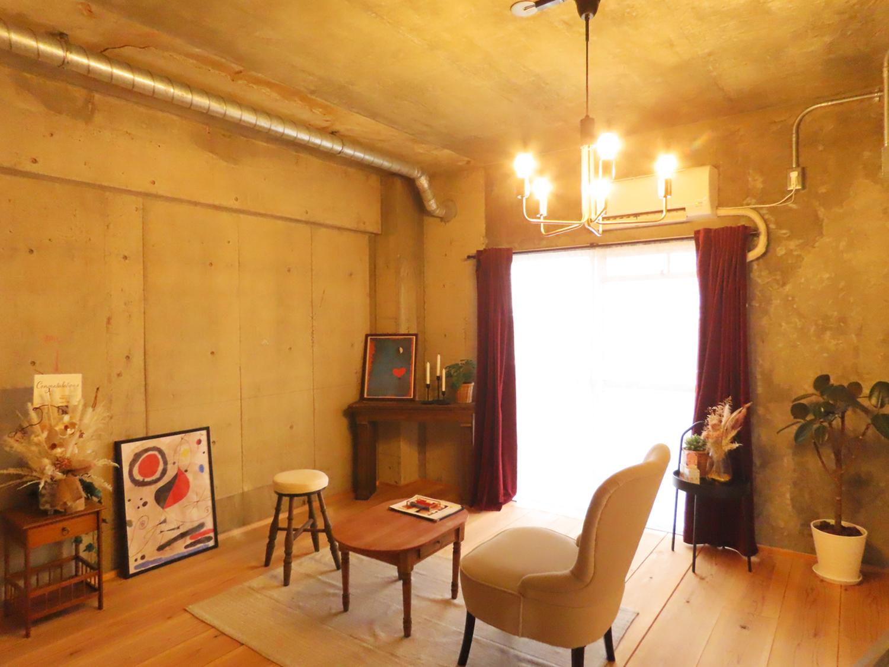

お客様の声
VOICE
ミロを選んでくださった
お客様からのお声
ニキビ・シミ・肝斑・エイジング・敏感肌・酒さ……さまざまなお悩みから解放された、というお喜びの声をいただいています。
グリーンピール55secを受け始めてからニキビ跡やシミが薄くなり、ニキビの数も減ってきました。新たにできてもすぐ枯れていくので、毎回ハーブの力に感動しています。お店の雰囲気も素敵で、カウンセリングや施術も丁寧。長年悩んでいましたが、ミロさんに出会えて本当に良かったです。
シミケアを利用しています。3回施術が終わったころ、旦那さんに「シミ薄くなってきてる」と言われました。確かに全体的に薄くなって、シミの境界がぼんやりしてきています。感動です。続けてシミを駆逐しようと思います。
両頬に大きな肝斑があり、長年の悩みでした。グリーンピールの施術をしてから、薄めのファンデーションで隠れる薄さに。ゼオスキンなど色々試してきましたが、これだけ薄くなったのはグリーンピールだけ。肝斑で悩まれている方にもおすすめです。
長年赤ら顔に悩まされていました。グリーンピールが良いと知り、通い始めて1年。化粧水の浸透が早い！と実感できるようになり、悩みだった赤ら顔もかなり落ち着きました。いろんな美容医療を受けてきましたが、断トツで効果を実感できる施術でした。
医療レーザーも検討しましたが、刺激の少ないシミケアを選びました。施術中は少しピリピリするくらいで、その後のパックやマッサージでとてもリラックス。翌日にはマシンを当てた箇所も肌に馴染み、これから薄くなるのが楽しみです。
毎回グリーンピール55secをお願いしています。皮膚科に通っても良くならなかったニキビが、通い始めてからは施術後に毎回効果を感じ、出来にくくなって肌の調子も良くなりました。話も親身に聞いてくださり、信頼できると感じています。
お店の雰囲気も施術も、いつも大満足です。ボディトリートメントでは身体がカチカチの時でも毎回手を抜くことなく、心も身体も癒してくださいます。ピーリングやシミケアの後も肌の状態を気にかけて相談に乗ってくれるので、安心してお任せできます。
月に1回コンスタントに通っています。最近気づいたのですが、あんなに困っていた乾燥肌が気にならなくなっていました。数年前は毎日パックしてもカッピカピだったのが嘘みたいです。
今回で6回目のグリーンピール。毎回受けるごとに顔の赤み・シミ・そばかすが少しずつ薄くなるのがわかり、いつも感動しています。首や腕に比べて顔がトーンアップしているのに気づいてびっくり。居心地の良い空間で毎回癒されます。
Instagramでは、実際のお客様のビフォーアフターを多数公開しています。グリーンピールやシミケアで肌がどう変わっていくのか、写真でご覧いただけます。
Instagramでビフォーアフターを見る